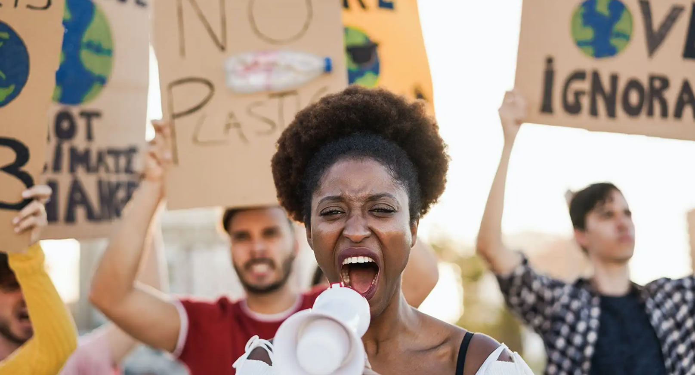

Ways To Protect the Environment

Why should we protect the environment?
There are several reasons we should strive to live a more sustainable lifestyle and protect the environment. Protecting our environment is the foundation for sustaining our planet, community and economy. Our environment supports and houses our ecosystems, allowing them to grow and thrive. If we fail to protect our environment, we will put the lives of humans, animals, plants and more at risk.
Ecosystems within our environment are deeply connected. We must protect them all to protect our environment. After all, we live and rely on nature to provide basic human survival needs. Protecting the environment means paying our dues to ensure opportunities for future generations. Natural resources are running out, and we must find ways to live more sustainable lifestyles to support future generations.
How can we protect the environment in our everyday lives?
As you go about your everyday life, there are several small behaviors that you can do to help protect the planet. It all starts with awareness. Once you become aware of your impact, you learn why it is essential to take action. Your actions will likely influence those around you. Most of the steps we will mention below benefit the environment and you. For example, bringing reusable bags to the store helps avoid plastic pollution. Here are a few additional ways you can help protect the environment:
Reduce, reuse and recycle: Rather than disposing of a shipping box right after you open the package, can you reuse it for organizing storage? Before you toss carrot skins in the trash, can you reuse them for a vegetable soup? Can you set your plants outside to absorb the natural rainwater if it's raining? Finding ways in your daily life to reduce, reuse and recycle resources can help protect the environment.
Use reusable grocery bags: This eliminates the need for plastic shopping bags, which often pollute the environment. Most reusable bags are more durable and can carry more weight than plastic bags. This can make bagging your groceries or new items more accessible.